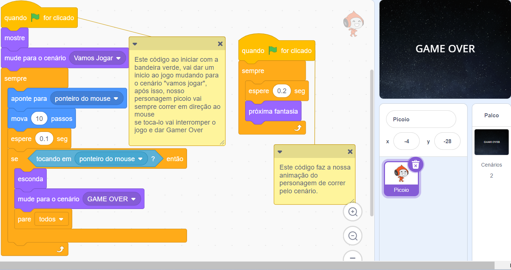
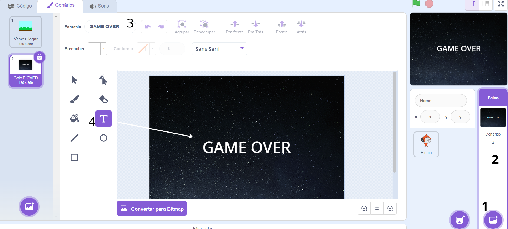

Sejam bem vindos a nossa segunda aula.
Para dar sequência primeiro você deve abrir sua conta no scratch e seguir nosso passo a passo!
- Entre em sua conta do Scratch em https://scratch.mit.edu/
- Após entrar, clique na opção " Criar " no canto superior ESQUERDO
- Leia todas as instruções abaixo antes de começar para não fica confuso
Let's Bora?
- 1. Bandeira Verde: Quando e como vai começar o jogo;
- 2. Mostre : Caso nosso personagemesteja escondido ele vai aparecer na tela após a bandeira verde ser pressionada.
- 3. Mude para o cenário "" : Irá executar uma ação de mudança de palco.
- 4. Sempre: Vai executar um loop infinito de tudo que está dentro do seu código.
- 5. Aponte para a direção do mouse e mova 10 passos: O próprio nome dos blocos ja fala o que irá acontecer, irá apontar para a direção do mou e fará com quem o personagem se desloque até o mouse.
- 6. Se < > entao: este bloco faz uma verificação, se o que estiver dentro dele for verdade vai acontecer a sequência dos códigos. No exemplo foi usado "tocando em ponteiro do mouse", se o personagem tocar vai executar o código abaixo.
- 7. Esconda e mude o cenário; o personagem que obtiver o bloco esconda, vai desaparecer da tela quando for executada a função do bloco, e após sumir, vai mudar para o cenário "game over"
- 8. Pare todo: quando executado, o código vai bloquear a execução de todos os códigos e parar o jogo.
E como surgiram esses cenários?
- Onde podemos adicionar vários cenários disponíveis no Scratch
- Quando clicarmos teremos a opção de códificar e alterar informações do cenário
- Alteramos o nome do nosso cenário
- Podemos adicionar textos em nosso cenário, bem como os outros itens disponíveis
Caso tenham permanecido dúvidas assita o vídeo abaixo.
O que aprendimos hoje?
- Criamos nosso primeiro jogo
- Personalizamos nosso cenário
- Conhecemos o que cada bloco do Scratch é capaz de fazer